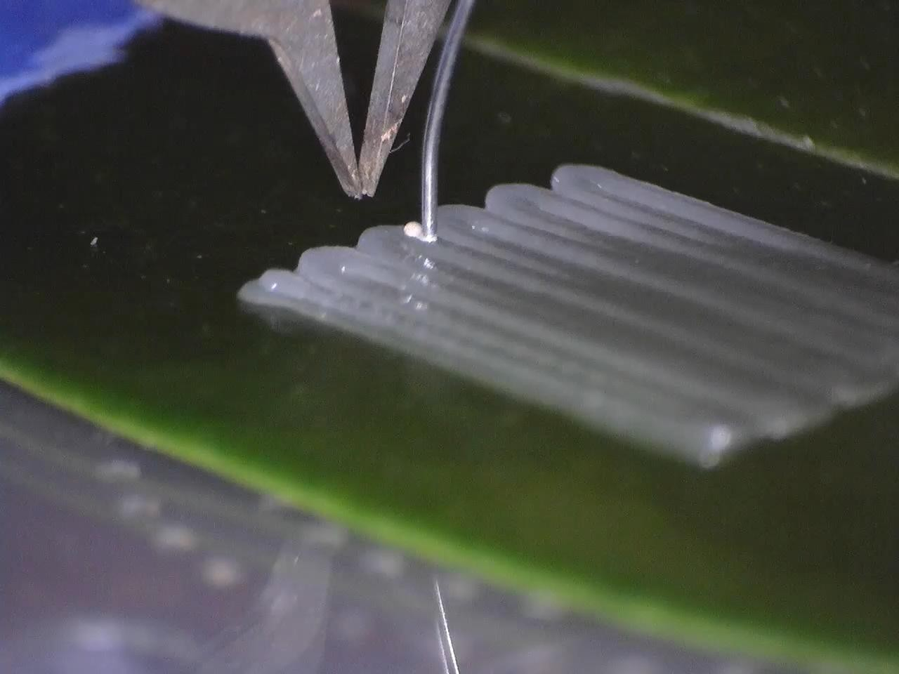
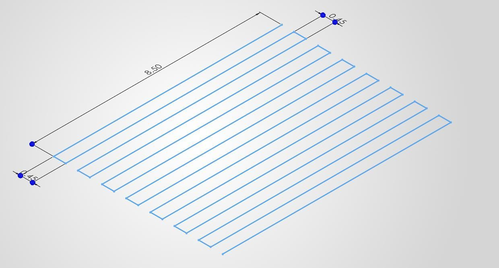
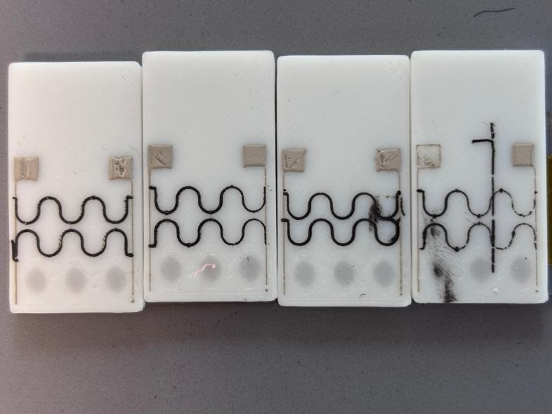
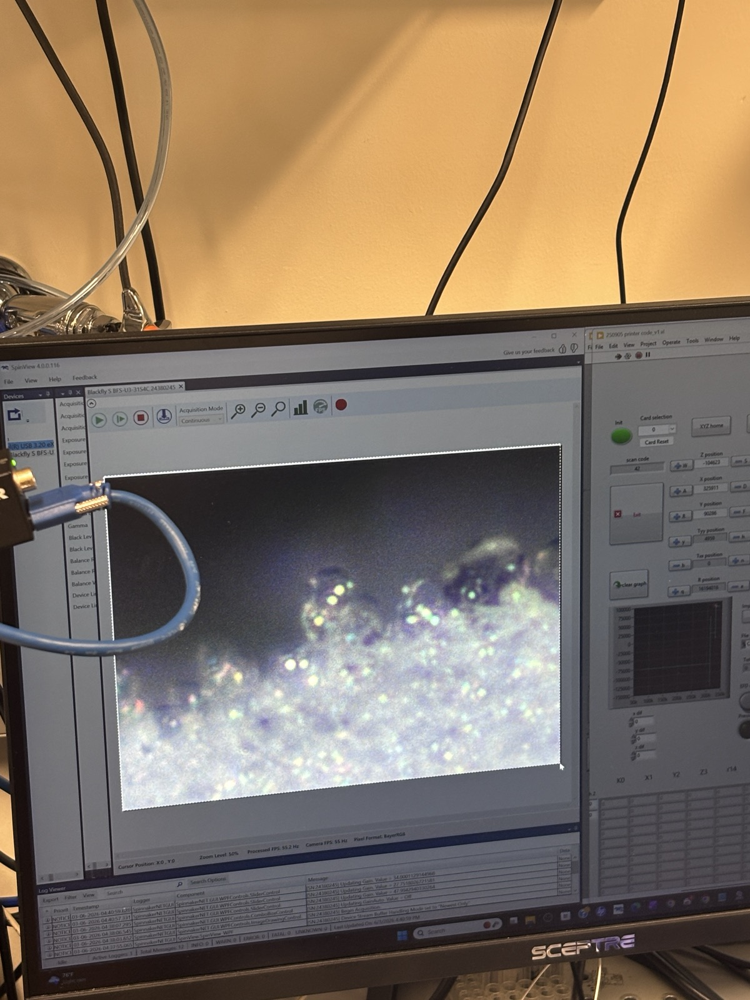
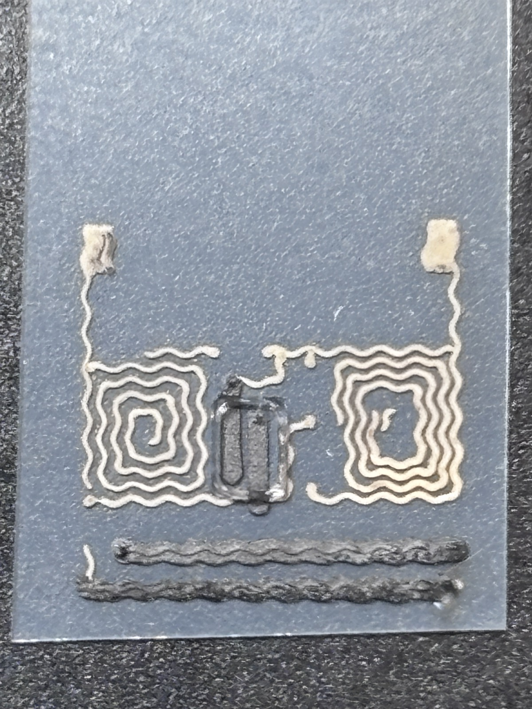
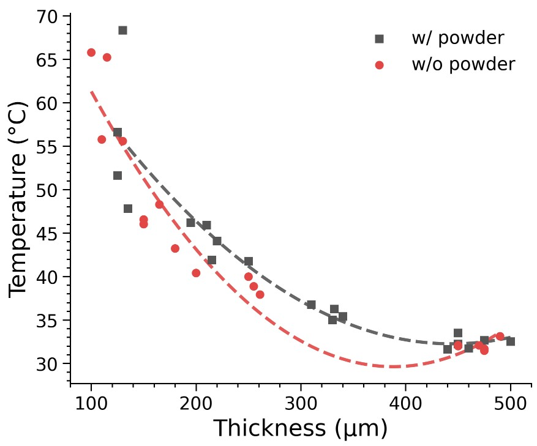

Undergraduate research · Summer 2026
Kong Research Group
I investigated how material formulation, printing conditions, and layer thickness affect the fabrication and thermal response of printed electronics on heat-sensitive surfaces.


Protecting biological surfaces
I investigated printable silicone layers intended to protect leaf surfaces during microplasma processing of conductive silver ink. I prepared PDMS and Ecoflex formulations, adjusted fumed silica content for printability, and explored thermally expanding microspheres as a foaming agent.
The challenge was to produce a consistent insulating surface while limiting heat damage to the substrate beneath it.
Print-path development
I created and refined DXF printing paths in SolidWorks and worked with the Python workflow that converts them into printer instructions. I varied line spacing, nozzle height, and extrusion conditions to improve layer uniformity and produce samples for comparison.


Sensor fabrication & testing
I printed silver traces, created insulating bridges with Ecoflex, and added conductive connections across them. I checked continuity with a multimeter and tested a fabricated sensor using a vector network analyzer, examining its resonance and coupling behavior.
I also worked on carbon and silver circuits on thermoplastic shrink film, including resistive heating patterns for a drone-folding project. Resistance variation and surface warping were ongoing fabrication challenges.


Samples & test setup





Thermal experiments
I prepared samples with and without foaming agent, measured their thickness under a microscope, and used an IR camera to record their response to repeated microplasma pulses. The setup included a custom sample holder for underside temperature measurements.
I refined the experiment plan to extend the measured thickness range and establish a non-foaming baseline. Microscope measurements showed that the finished layer thickness did not simply equal the programmed nozzle height, so I used measured thickness when comparing samples.
During testing, I kept probe spacing and pulse timing consistent, positioned silver drops near the sample centers, and used a dry-air supply to help control humidity. I extracted peak-temperature data from the recordings and used Python plots to compare thickness and material conditions.

Results
In these trials, sample thickness showed a much stronger relationship with measured temperature than the foaming-agent condition. The initial foaming-agent comparison was inconclusive; I subsequently prepared a higher-concentration mixture for further testing.
This made thickness control a central part of the experiment, rather than treating nozzle height alone as a measure of the finished layer.


Printing & IR recordings
Recordings of PDMS printing and infrared temperature readings during the experiments.